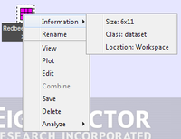
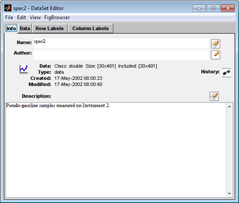
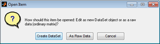
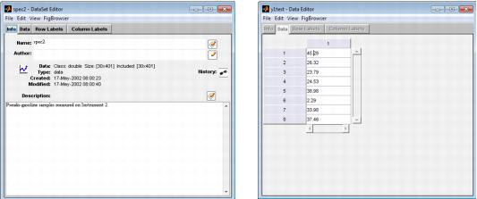
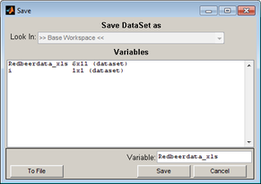
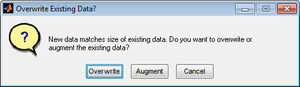
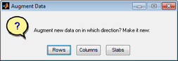

Table of Contents | Previous | Next
Manipulating items
After you have imported or loaded data items into the Workspace Browser, a variety of options are available for manipulating the item, including:
Viewing information about the item
You can right-click on an icon and on the context menu that opens, select from options for viewing information about the item, renaming the item, and viewing details about the item. For a data item, options are also available for plotting the imported data, editing the item, and analyzing the data. In addition, if multiple data items are selected, then an option to combine the data items is also available.
- Context menu for an item in the Workspace Browser
- 
Opening the item for viewing or editing
Double-click an icon to open the item for viewing only or for editing.
- If the item is not editable, when you double-click the icon for it, an Information dialog box opens. You can view information about the non-editable item in this dialog box.
|
- Information dialog box

- If the item is a DataSet, when you double-click its icon, the DataSet Editor window opens. You can edit the DataSet (data, row labels, column labels, and so on) as needed in this window. (See DataSet Editor Window.)
|
- DataSet Editor window
- 
- If the item is not a DataSet, but another type of editable data, when you double-click its icon, the Open Item dialog box opens, asking you how you want to open the item-either as a new dataset or as a raw data (which means editing the data as a simple matrix without adding labels or other DataSet information).
|
- Open Item dialog box
- 
Because, in general, any data that is loaded into Solo must ultimately be converted to a DataSet object, you can click Create Dataset to proactively carry out this conversion; otherwise, you can click As Raw Data to edit the item "as is." The same window opens whether you click Create DataSet or As Raw Data; however, as shown in the figure below, if you click Create DataSet, all of the tabs are enabled for the Dataset Editor window while if you click As Raw Data, only the Data tab is open for the Data Editor window.
- DataSet Editor window and Data Editor window
- 
With some exceptions, if you edit a data item, you must explicitly request to overwrite the data item in the Workspace Browser with the changes. To save changes to a data item:
| 1.
|
In the appropriate Editor window, edit the item as needed, and then on the Editor window menu, click File > Save.
|
- The Save dialog box opens. The Variable name field is automatically populated with the name of the data item.
- Save dialog box
- 
| 2.
|
Do one of the following:
|
- Click Save to override the selected data item in the Workspace Browser with the modified data item.
|
- In the Variable field, enter a new name for the data item, and then click Save to save the modified data item as a new item in the Workspace Browser.
|
Dragging and dropping items
- You can drag a data icon to a shortcut icon to open the Analysis window and analyze the data.
|
- You can drag a model icon to an shortcut icon to open the Analysis window to load a model, and optionally, apply it to new data.
|
- If the size of data items matches in at least one dimension, (either the same number of rows or the same number of columns), or if data items are identical in size, you can drag a data icon onto another data icon or onto an open Editor window to combine these two data items and create a single data item. You can repeat this step as many times as needed to combine all of the necessary data items.
|
Note: You cannot join data items that do not match in at least one dimension.
Consider the following:
- DataSet item: A, 300 rows x 20 cols
|
- DataSet item: B, 200 rows x 20 cols
|
- DataSet item: C, 300 rows x 1 col
|
- DataSet item: A_copy, 300 rows x 20 cols
|
You can join A with B because these DataSets have the same number of columns, or you can join A with C because these DataSets have the same number of rows. For example, when you join A with B, you are given two options:
- Overwrite existing data dialog box
- 
You can overwrite A with the B data, or you can add the B data to A. In this case, the data is automatically joined as additional rows, and a 500 row x 20 column dataset is created. Similarly, if you join A with C, you can overwrite A with the C data, or you can add the C data to A. In this case, the data is automatically joined as additional columns, and a 300 row x 21 column dataset is created.
You can also join A with A_copy because these two data items are identical. You are again given two options for joining the data:
- Overwrite existing data dialog box
You can overwrite A with the A_copy data, or you can add the A_copy data to A. If you choose to add the A_copy data to A, you have three options for joining the data:
- Augment data dialog box
- 
- You can join the data by rows. In this case, a 600 row x 20 column DataSet is created. The 300 new rows are considered as new samples.
|
- You can join the data by columns. In this case, a 300 row x 40 column DataSet is created. The 20 new columns are considered as new variables for the same samples.
|
- You can join the data as slabs. In this case, one DataSet is essentially placed behind the other to create a 300 column x 20 row x 2 DataSet. (You typically join data as slabs if the data is to be used in multi-way data analysis methods.)
|